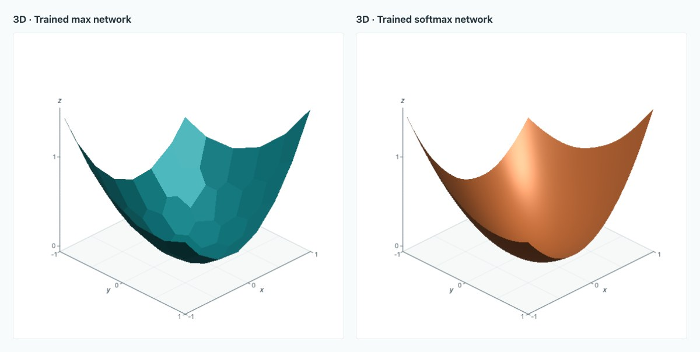

Convex approximation with max and softmax layers
How do max and softmax layers approximate convex functions? Supporting planes give a constructive proof, error bounds, and a tradeoff between neuron count and temperature. https://www.gpeyre.com/blog/preparations/convex-max-softmax-approximation.html